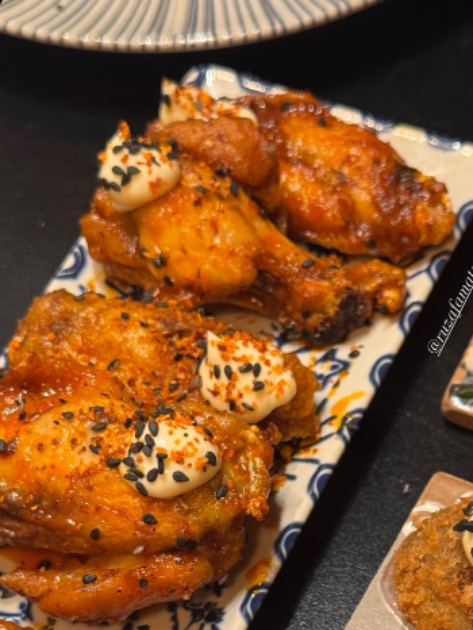
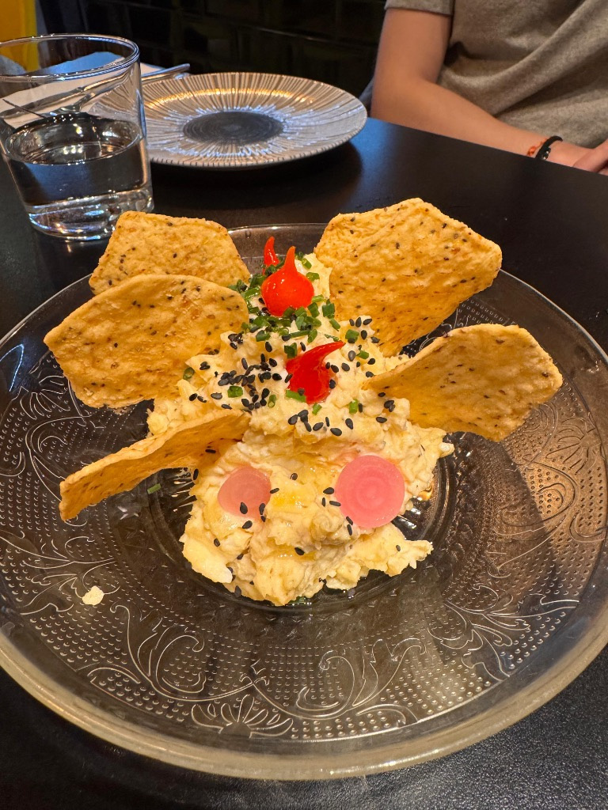
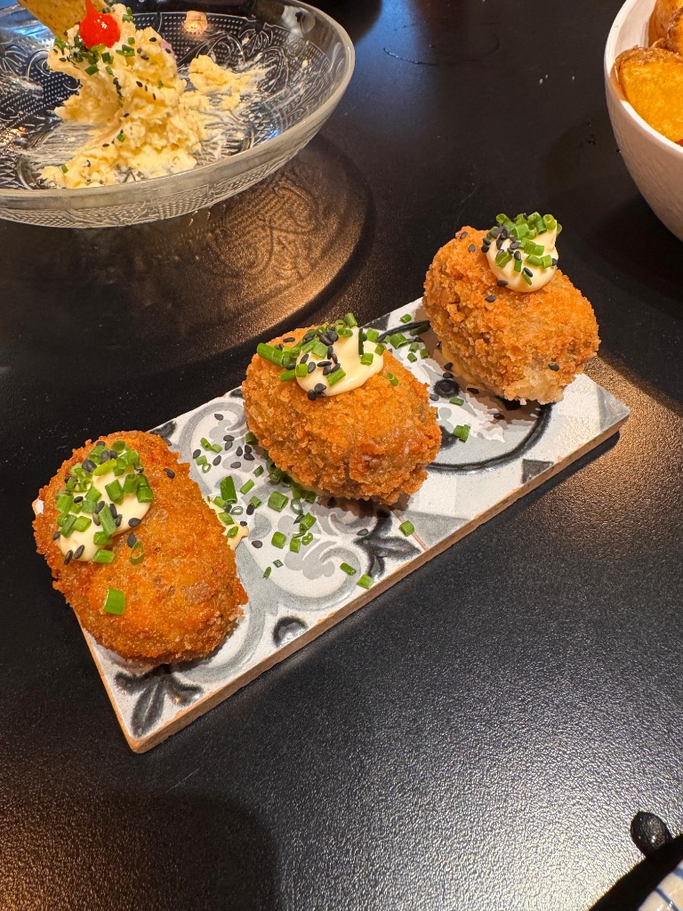
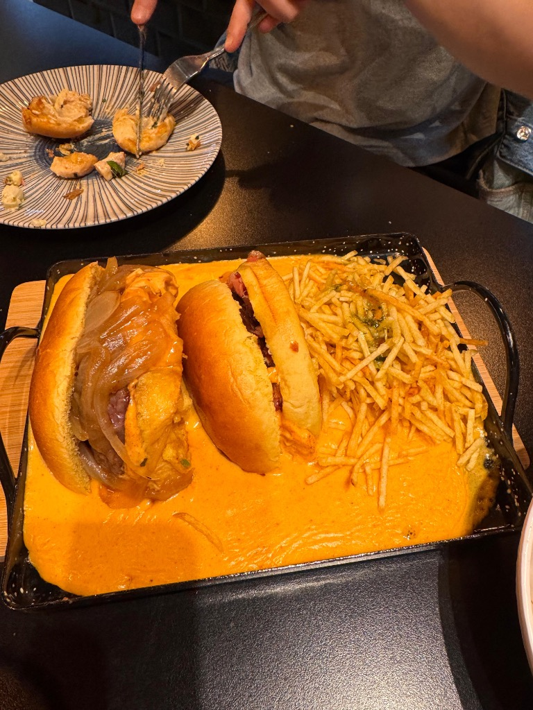

Ensaladilla trufada
Con chips de maíz y pimiento de lágrima.
Calle Sevilla, 12 · Ruzafa
Tapas con carácter, cocina curiosa y una mesa que invita a quedarse. Esto es Matador.

01 / La esencia
Una cocina que mezcla ideas. Una mesa que reúne a los tuyos.
En la calle Sevilla, Matador propone una cocina creativa de inspiración internacional. Tapas, contrastes y platos para compartir en un ambiente informal.
De una ensaladilla con trufa a unas alitas ahumadas: sabores reconocibles con un giro propio. El plan empieza con el primer plato.
Conoce Matador en Instagram ↗02 / Abre el apetito
Tres formas de empezar.
Y muchas ganas de compartir.

Trufa, chips de maíz y pimiento de lágrima.

Jamón ibérico y panceta. Un bocado que apetece repetir.

Cheddar, jamón ibérico y cebolla caramelizada.
El siguiente plan ya tiene sitio
La mesa te espera en Ruzafa.
Reservar en OpenTable ↗Consulta los días y turnos disponibles en la plataforma.
04 / Nos vemos en Ruzafa
Un rincón de Valencia para encontrarse,
pedir algo al centro y dejar que el plan siga.
Consulta los turnos en OpenTable ↗